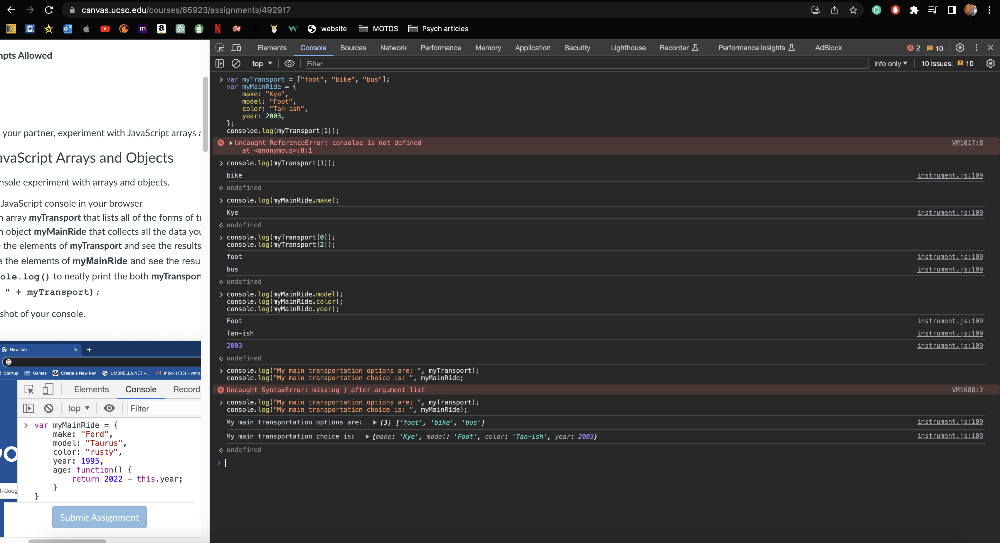
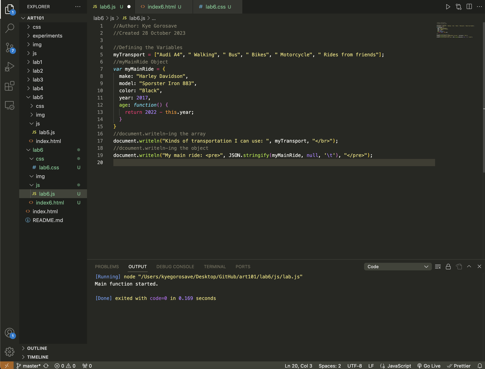

Lab 6 - Arrays and Objects
Challenge
The challenge of this lab was to be able to create arrays and objects and implment them into your HTML. Being able to successfully create arrays is an effective way to store data and creating objects is an effective way to call all of that data in one function.
Problems
I had some problems with the Javascript file and getting the Script Output to show on the HTML page. Using the JSON.stringify gave me problem too, but only because I didn't keep it in the document.writeln parantheses.
Reflection
This lab was pretty cool it was an interesting time doing it. I have experience with arrays and objects from other CS classes, so it was like a good refresher to do it all again. I didn't think this assignment was too hard, but I put in a good amount of effort figuring out all of the Javascript stuff.
Results
Javascript Browser Console
Javascript Source Code
